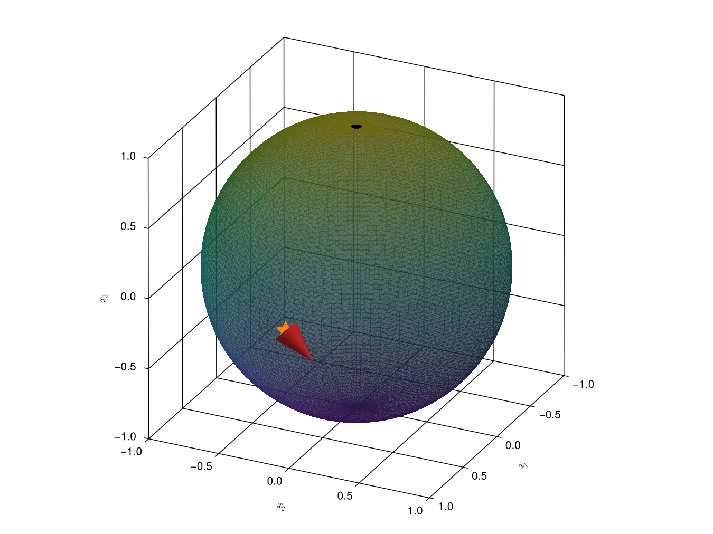
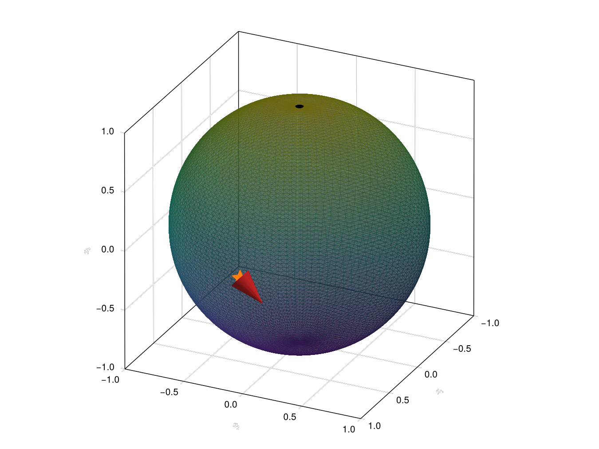
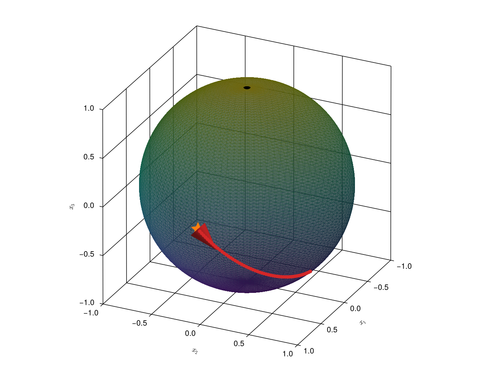
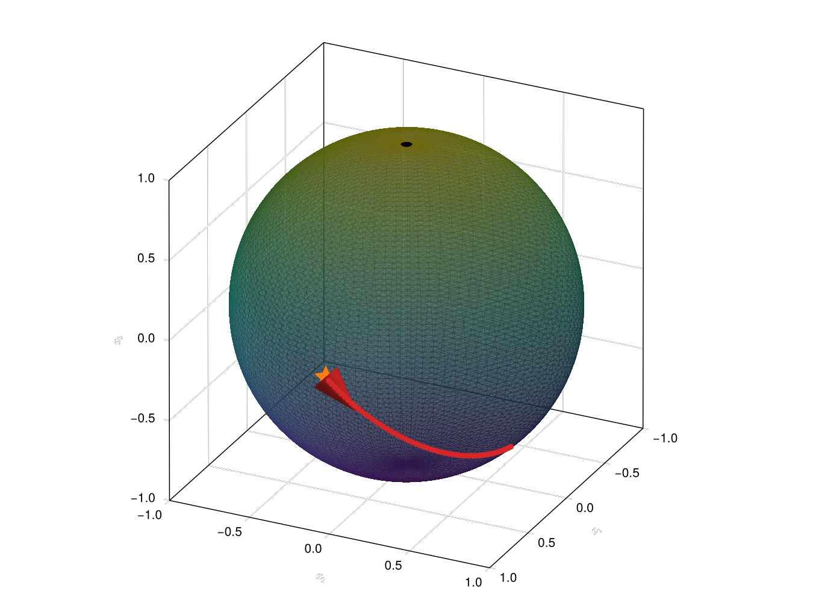

Riemannian Manifolds
A Riemannian manifold is a manifold $\mathcal{M}$ that we endow with a mapping $g$ that smoothly[1] assigns a metric $g_x$ to each tangent space $T_x\mathcal{M}$. By a slight abuse of notation we will also refer to this $g$ as a metric.
After having defined a metric $g$ we can associate a length to each curve $\gamma:[0, t] \to \mathcal{M}$ through:
\[L(\gamma) = \int_0^t \sqrt{g_{\gamma(s)}(\gamma'(s), \gamma'(s))}ds.\]
This $L$ turns $\mathcal{M}$ into a metric space:
The metric on a Riemannian manifold $\mathcal{M}$ is
\[d(x, y) = \inf_{\substack{\text{$\gamma(0) = x$ and}\\ \gamma(t) = y}}L(\gamma),\]
where $t$ can be chosen arbitrarily.
If a curve is minimal with respect to the function $L$ we call it the shortest curve or a geodesic. So we say that a curve $\gamma:[0, t]\to\mathcal{M}$ is a geodesic if there is no shorter curve that can connect two points in $\gamma([0, t])$, i.e.
\[d(\gamma(t_i), \gamma(t_f)) = \int_{t_i}^{t_f}\sqrt{g_{\gamma(s)}(\gamma'(s), \gamma'(s))}ds,\]
for any $t_i, t_f\in[0, t]$.
An important result of Riemannian geometry states that there exists a vector field $X$ on $T\mathcal{M}$, called the geodesic spray, whose integral curves are derivatives of geodesics. We formalize this statement as a theorem in the next section.
Geodesic Sprays and the Exponential Map
To every Riemannian manifold we can naturally associate a vector field called the geodesic spray or geodesic equation. For our purposes it is enough to state that this vector field is unique and well-defined [5].
The important property of the geodesic spray is
Given an initial point $x$ and an initial velocity $v_x$, an integral curve for the geodesic spray is of the form $t \mapsto (\gamma_{v_x}(t), \gamma_{v_x}'(t))$ where $\gamma_{v_x}$ is a geodesic. We further have the property that the integral curve for the geodesic spray for an initial point $x$ and an initial velocity $\eta\cdot{}v_x$ (where $\eta$ is a scalar) is of the form $t \mapsto (\gamma_{\eta\cdot{}v_x}(t), \gamma_{\eta\cdot{}v_x}'(t)) = (\gamma_{v_x}(\eta\cdot{}t), \eta\cdot\gamma_{v_x}'(\eta\cdot{}t)).$
It is therefore customary to introduce the exponential map $\exp:T_x\mathcal{M}\to\mathcal{M}$ as
\[\exp(v_x) := \gamma_{v_x}(1),\]
and we see that $\gamma_{v_x}(t) = \exp(t\cdot{}v_x)$. In GeometricOptimizers we denote the exponential map by geodesic to avoid confusion with the matrix exponential map[2] which is called as exp in Julia. So we use the definition:
\[ \mathtt{geodesic}(x, v_x) \equiv \exp(v_x).\]
We give an example of using this function here:
Y = rand(StiefelManifold, 3, 1)
v = 2 * rand(3, 1)
Δ = v - Y * (v' * Y)
# plot a sphere with radius one and origin 0
surface!(ax, Main.sphere(1., [0., 0., 0.])...; alpha = .5, transparency = true)
point_vec = ([Y[1]], [Y[2]], [Y[3]])
scatter!(ax, point_vec...; color = morange, marker = :star5, markersize = 30)
arrow_vec = ([Δ[1]], [Δ[2]], [Δ[3]])
arrows!(ax, point_vec..., arrow_vec...; color = mred, linewidth = .02)┌ Warning: `arrows` are deprecated in favor of `arrows2d` and `arrows3d`.
└ @ Makie ~/.julia/packages/Makie/XzVRj/src/basic_recipes/arrows.jl:166
┌ Warning: `arrows` are deprecated in favor of `arrows2d` and `arrows3d`.
└ @ Makie ~/.julia/packages/Makie/XzVRj/src/basic_recipes/arrows.jl:166

We now solve the geodesic spray for $\eta\cdot\Delta$ for $\eta = 0.1, 0.2, \ldots, 5.5$ with the function geodesic and plot the corresponding points:
Δ_increments = [Δ * η for η in 0.1 : 0.1 : 5.5]
Y_increments = [geodesic(Y, Δ_increment) for Δ_increment in Δ_increments]
for Y_increment in Y_increments
scatter!(ax, [Y_increment[1]], [Y_increment[2]], [Y_increment[3]];
color = mred)
end┌ Warning: `arrows` are deprecated in favor of `arrows2d` and `arrows3d`.
└ @ Makie ~/.julia/packages/Makie/XzVRj/src/basic_recipes/arrows.jl:166
┌ Warning: `arrows` are deprecated in favor of `arrows2d` and `arrows3d`.
└ @ Makie ~/.julia/packages/Makie/XzVRj/src/basic_recipes/arrows.jl:166

A geodesic can be seen as the equivalent of a straight line on a manifold. Also note that we drew a random element form StiefelManifold here, and not from $S^2$. This is because the category of Stiefel manifolds is more general than the category of spheres $S^n$: $St(1, 3) \simeq S^2$.
The Riemannian Gradient
The Riemannian gradient is essential when talking about optimization on manifolds.
The Riemannian gradient of a function $L:\mathcal{M}\to\mathbb{R}$ is a vector field $\mathrm{grad}^gL$ (or simply $\mathrm{grad}L$) for which we have
\[ g_x(\mathrm{grad}^gL(x), v_x) = (\nabla_{\varphi_U(x)}(L\circ\varphi_U^{-1}))^T \varphi_U'(v_x), \]
for all $v_x\in{}T_x\mathcal{M}.$ In the expression above $\varphi_U$ is some coordinate chart defined in a neighborhood $U$ around $x$.
In the definition above $\nabla$ indicates the Euclidean gradient:
\[ \nabla_xf = \begin{pmatrix} \frac{\partial{}f}{\partial{}x_1} \\ \cdots \\ \frac{\partial{}f}{\partial{}x_n} \end{pmatrix}.\]
We can also describe the Riemannian gradient through differential curves:
The Riemannian gradient of $L$ is a vector field $\mathrm{grad}^gL$ for which
\[g_x(\mathrm{grad}^gL(x), \dot{\gamma}(0)) = \frac{d}{dt}L(\gamma(t)),\]
where $\gamma$ is a $C^\infty$ curve through $x$.
By the non degeneracy of $g$ the Riemannian gradient always exists [3]. In the following we will also write $\mathrm{grad}^gL(x) = \mathrm{grad}^g_xL = \mathrm{grad}_xL.$ We will give specific examples of this when discussing the Stiefel manifold and the Grassmann manifold.
Gradient Flows and Riemannian Optimization
In GeometricOptimizers we can include weights in neural networks that are part of a manifold. Training such neural networks amounts to Riemannian optimization and hence solving the gradient flow equation. The gradient flow equation is given by
\[X(x) = - \mathrm{grad}_xL.\]
Solving this gradient flow equation will then lead us to a local minimum on $\mathcal{M}$. This will be elaborated on when talking about optimizers. In practice we cannot solve the gradient flow equation directly and have to rely on approximations. The most straightforward approximation (and one that serves as a basis for all the optimization algorithms in GeometricOptimizers) is to take the point $(x, X(x))$ as an initial condition for the geodesic spray and then solve the ODE for a small time step. Such an update rule, i.e.
\[x^{(t)} \leftarrow \gamma_{X(x^{(t-1)})}(\Delta{}t)\text{ with $\Delta{}t$ the time step},\]
we call the gradient optimization scheme.
Library functions
geodesic, metric and rgrad. Their docstrings are on the reference page, where every docstring in the package is rendered once; the names above link to them.
References
- [2]
- S. Lang. Fundamentals of differential geometry. Vol. 191 (Springer Science & Business Media, 2012).
- [5]
- M. P. Do Carmo and J. Flaherty Francis. Riemannian geometry. Vol. 2 (Springer, 1992).
- 1Smooth here refers to the fact that $g:\mathcal{M}\to\text{(Space of Metrics)}$ has to be a smooth map. But in order to discuss this in detail we would have to define a topology on the space of metrics. A more detailed discussion can be found in [2, 3, 5].
- 2The Riemannian exponential map and the matrix exponential map coincide for many matrix Lie groups.